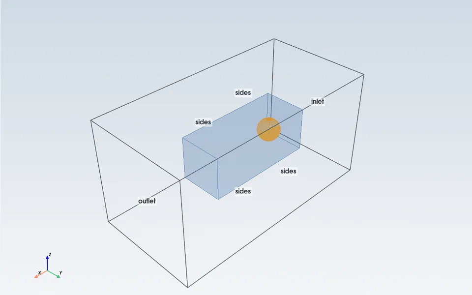
Install and first look
Set up OpenFOAM and EasyFOAM on your computer, start the program and see how it is laid out.
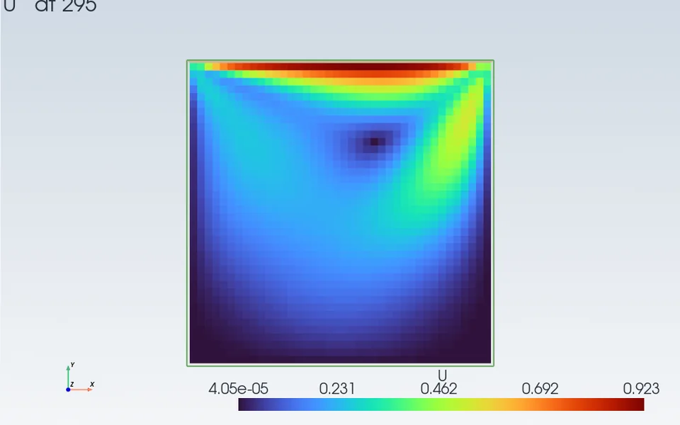
Lid-driven cavity
Your first case, built from an empty project: a closed box of fluid stirred by its sliding lid.
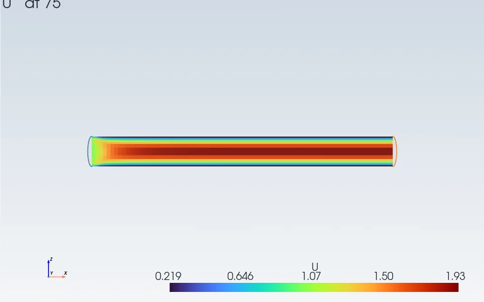
Laminar flow in a pipe
Flow inside a shape: a straight pipe whose result you can check by hand.
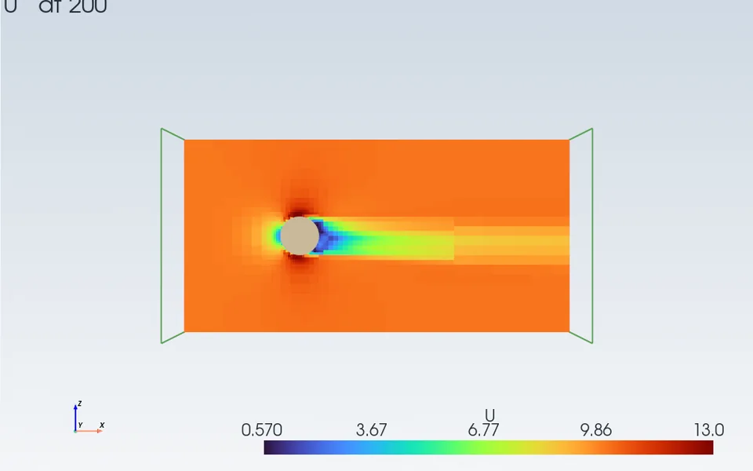
Air flow past a sphere
External flow: a body in a wind tunnel, a turbulence model, and its drag.
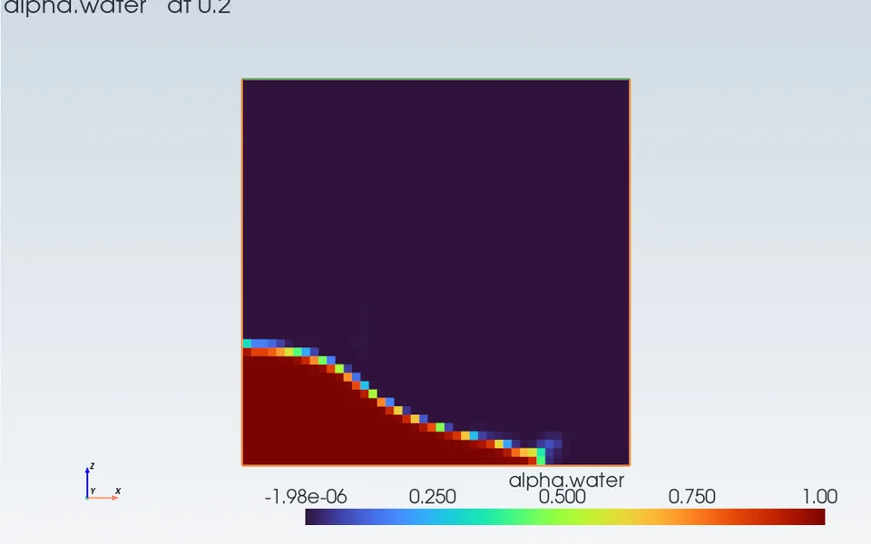
Dam break
Water and air with a free surface: a column of water collapses in a tank.
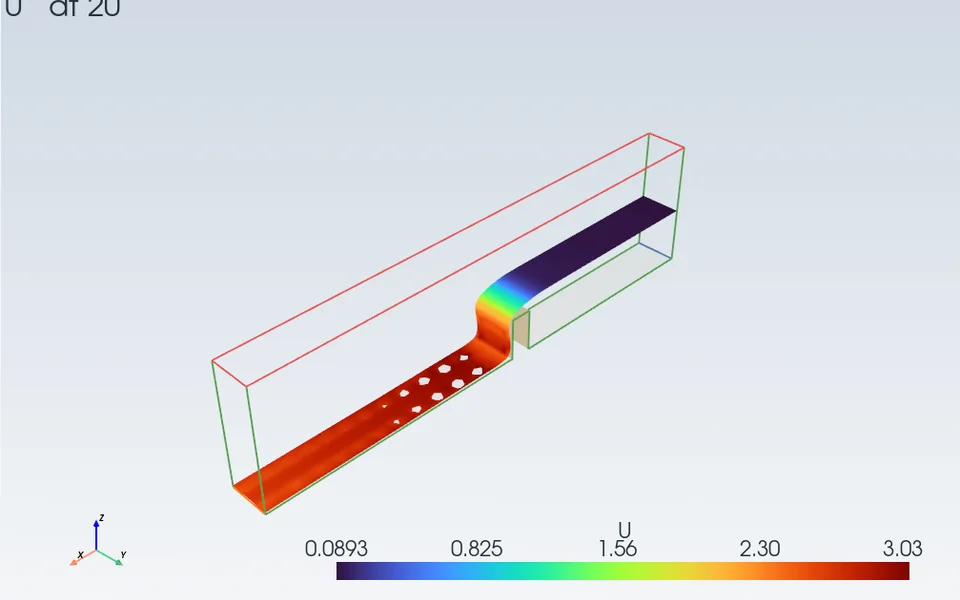
Flow over a weir
An open channel with a weir: set a discharge, measure the water level and compare it with the weir formula.
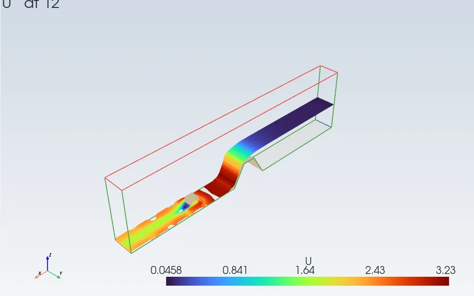
Draw your own weir
No geometry file needed: sketch the cross-section of a weir with the mouse, add a block, and run the flow over them.
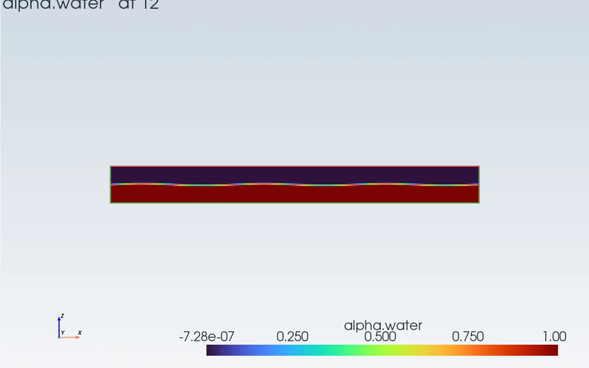
Waves in a flume
Make regular waves at one end of a flume, absorb them at the other, and measure them on the way.
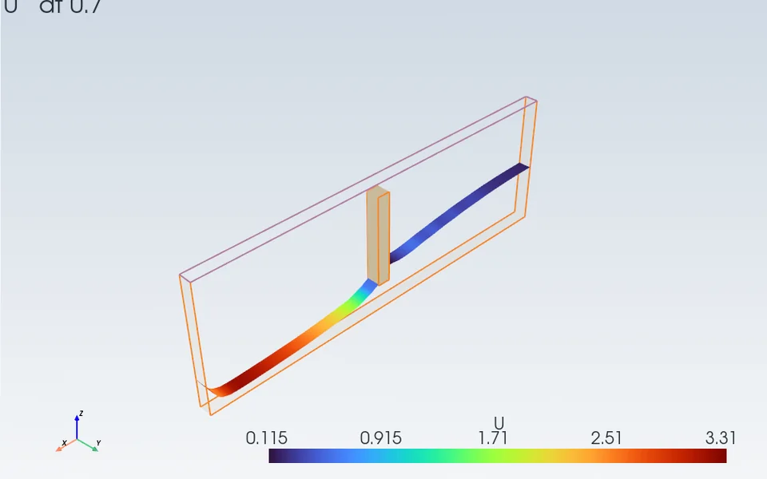
Lifting sluice gate
A shape that moves during the run: a gate lifts and the water behind it runs out underneath.
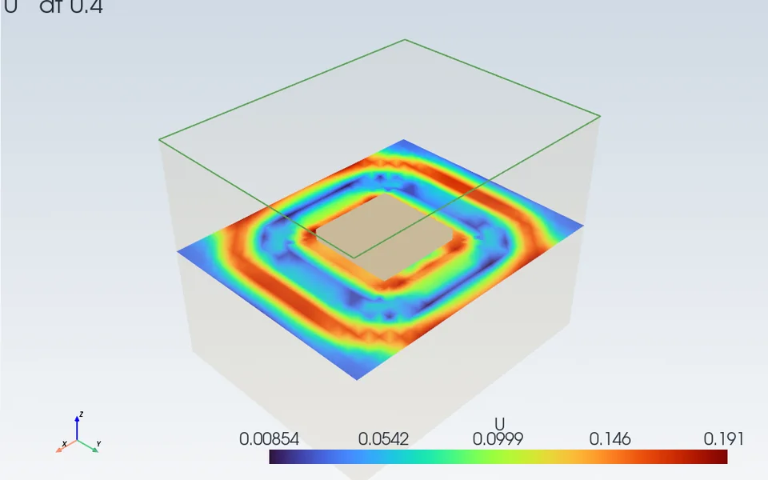
Floating box
A body that the water moves: a box is let go a little too high and bobs until it floats at rest.
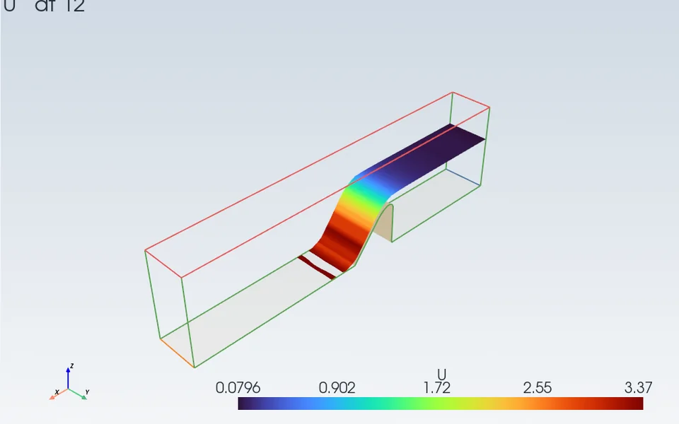
Spillway from your own geometry
Import an STL file of an ogee spillway and build the whole free-surface case around it from an empty project.
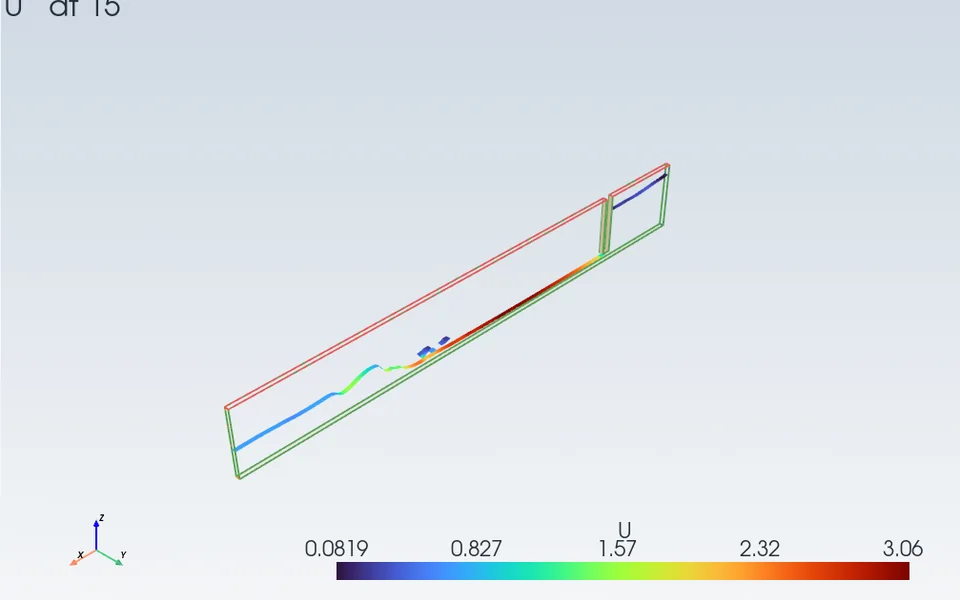
Hydraulic jump: long section and loads
Water shoots under a sluice gate and jumps back up. Find the jump, check it against Bélanger and work out the force on the gate.
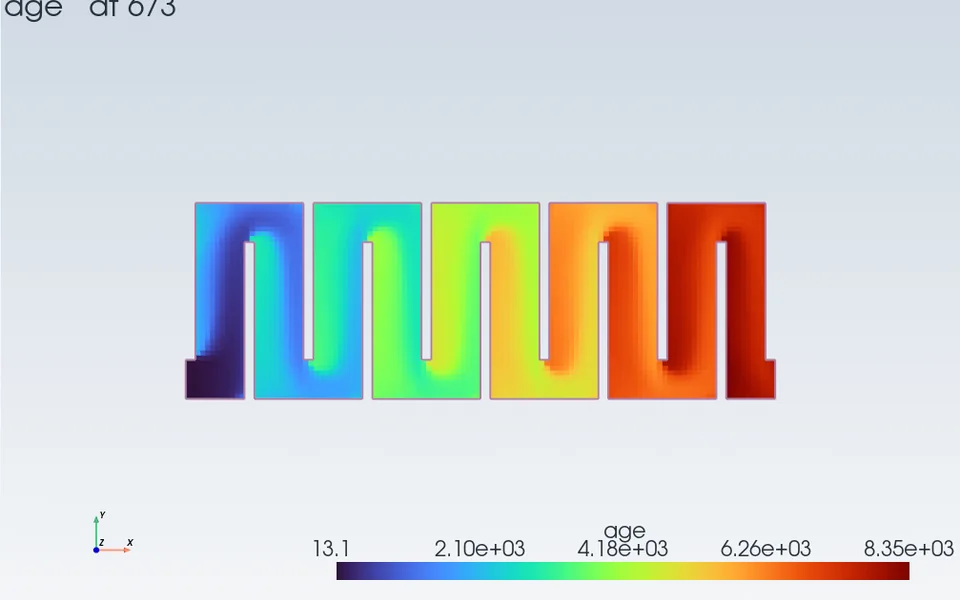
Contact tank: water age and a tracer test
How long does the water stay in a baffled chlorine contact tank? Map its age, follow a tracer through it and read off T10 and the baffling factor.
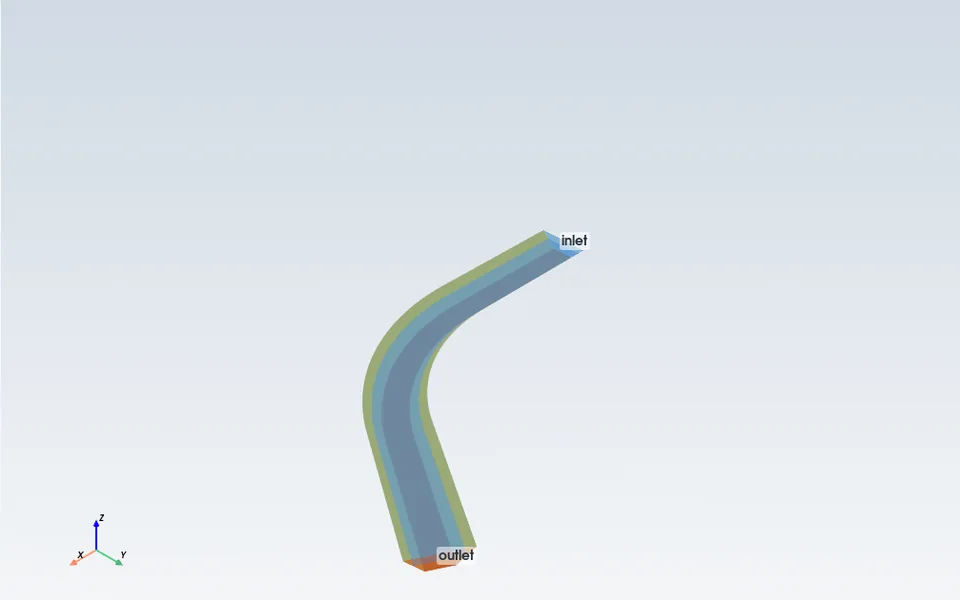
Build a channel with a bend
Draw a trapezoidal channel with a bed slope and a 60° bend, let EasyFOAM mesh it to fit, and follow the water round the bend in a long section.
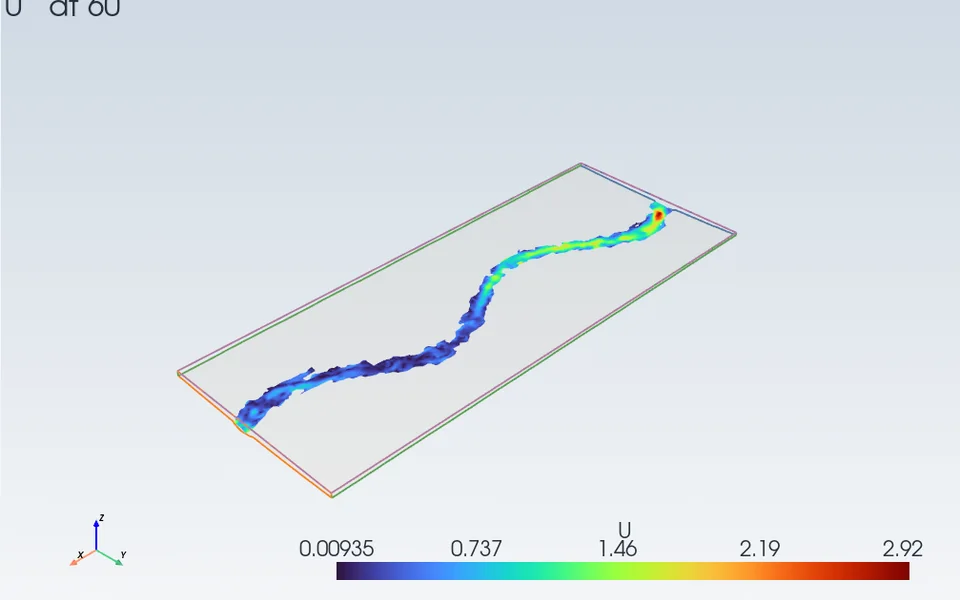
A river reach from a survey
Bring in the ground of a valley from an ESRI ASCII grid, turn it so the river runs along x, and send a flow down its meandering channel.
No tutorial on that topic yet.